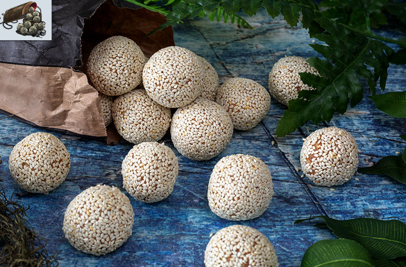

Sekiro: Pellets

A Shinobi's Best Friend
While traipsing around Ashina a shinobi will undoubtedly become parched and famished, and when the healing
gourd goes dry you will want a healthy supply of pellets. These savory snacks are chock-full
nutty-goodness and are accented with a bit of white chocolate and cranberry.
Ingredients:
- ¼ cup macadamia nuts
- ¼ cup sunflower seeds
- ½ cup cashews
- ⅔ cup almond butter
- 1 tbsp honey
- 1 tsp almond extract
- ½ cup ground flax seeds
- 1 tsp salt
- 2 tbsp white sesame seeds
- ½ cup dried cranberries
- ¾ cup white chocolate chips
Steps:
- Place the macadamia nuts, sunflower seeds, and cashews
in a food processor. Pulse until the nuts are completely crumbled. Add the rest of the ingredients and blend
until completely combined.
- Transfer the mixture into a bowl to make sure you don’t cut yourself with the blade of the food
processor. Take about a tablespoon of the mixture and form a ball in your hand. Place on a tray
with parchment paper. Repeat this with the rest of the mixture.
- Add some white sesame seeds to a ziplock bag. Take each ball and toss it until covered with sesame
seeds. Place back on the tray with parchment paper. Repeat this with the remaining balls. Chill
for one hour.
- Transfer the balls into a airtight container. Can be stored in the refrigerator for up to two weeks.
Back to main page